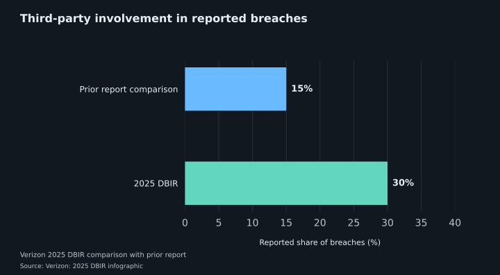

Your website depends on code your team did not write. A WordPress shop uses plugins and a theme. A custom application uses libraries, build tools, and hosted services. A small brochure site may load analytics, fonts, a contact form, and an embedded calendar. Each dependency provides something useful, and each introduces a relationship the business needs to understand.
Software supply chain security begins with that ordinary reality. The objective is to know what the site uses, who maintains it, how changes reach production, and what the team can do when a component becomes vulnerable or unavailable. You can make meaningful progress without turning a small business into a security operations center.
This guide explains website dependency management, WordPress maintenance, update decisions, access control, and recovery. It combines published guidance with a practical workflow I recommend for business websites and applications. The examples illustrate operating choices; they do not report a security assessment of a named client.
What counts as a website dependency?
A dependency is something the service needs in order to work as intended. Some dependencies are visible, such as a payment provider or booking widget. Others sit behind the interface: a package that parses uploaded files, a plugin that creates invoice PDFs, or a build action that publishes the site.
Separate code dependencies from service dependencies. A library may ship inside your application and run on your server. An external API remains outside your deployment and has its own availability, credentials, pricing, and change schedule. Both matter, but they need different monitoring and response plans.
Also distinguish direct and indirect dependencies. Your application may install a package that itself uses several other packages. An inventory that lists only the components a developer selected manually can miss much of the actual software. Build tooling can help reveal the complete resolved tree for supported ecosystems.
For business purposes, connect each important dependency to a task. If the invoicing plugin fails, which orders require manual attention? If the map widget disappears, can a customer still find the address? This link between technical components and business consequences helps the team prioritize maintenance rationally.
What the breach research shows—and what it does not
Verizon's 2025 Data Breach Investigations Report announcement reported that third-party involvement in breaches doubled to 30%. Its report infographic compares that with 15% in the prior report. Third parties include a broad set of suppliers and relationships; the figures do not mean that website plugins caused 30% of breaches.

| Group or target | Value |
|---|---|
| Prior report comparison | 15% |
| 2025 DBIR | 30% |
The chart compares reported shares across report editions. It is not a probability that your website will suffer an incident, and the underlying incident sets differ. Use the finding as a reason to examine supplier exposure, then use your own inventory and threat context to decide what needs attention.
A small business can start with a much narrower question: if a component required an urgent update today, would anyone know it exists and have the access needed to act? Answering that question often identifies a practical weakness before the team needs to interpret a complex risk score.
Build an inventory someone can maintain
Create an inventory that records component name, purpose, installed version where applicable, source, owner, and update route. For external services, include the account and the business process they support. Keep the inventory close enough to the development or maintenance workflow that someone will actually update it.
For WordPress, list active and inactive plugins, the theme, child theme, core version, and relevant hosting features. For a custom application, preserve the package manifests and lockfiles, then use appropriate tooling to inspect resolved dependencies. Add deployment tools and external scripts that operate outside the main package manager.
Identify components with unclear provenance. A plugin copied from an unknown download site deserves a different response from an official package whose maintainer and update process you can verify. Likewise, a custom script pasted into a page should have a documented purpose and an owner.
Keep business-critical dependencies easy to find. The first version of the inventory does not need an elaborate dashboard. A concise, accurate record is more useful than an abandoned spreadsheet with dozens of fields nobody understands. Add detail when it supports a real decision, such as license renewal, access review, or incident response.
Understand what a software bill of materials can do
A software bill of materials, often called an SBOM, describes components in a software product. It can help connect a newly disclosed issue to the versions you ship. Its usefulness depends on accuracy, coverage, and how the organization uses it after generation.
An SBOM does not prove that every component is secure, and it does not replace a business service map. A machine-readable component list might identify a vulnerable library while saying little about which customer journey uses the affected function. Both technical inventory and operational context matter.
For a small application, begin with dependency tracking that the team can sustain. If a procurement requirement or deployment process calls for an SBOM, choose a supported format and generate it as part of the release. Keep the artifact associated with the relevant version rather than treating one old export as a permanent record.
NIST's Secure Software Development Framework provides a broader vocabulary for secure development and supplier conversations. Use that kind of framework to organize responsibilities. Then ask which controls the project actually implements and what evidence the team keeps. A framework name on a proposal is not the same as an operating practice.
Set update priorities using context
An update notification is a starting point for investigation. Determine whether the installed version is affected, whether the vulnerable behavior is reachable, whether exploitation is known, and what controls currently reduce exposure. A severe issue in an internet-facing path may deserve action ahead of a routine feature release.
OWASP's dependency management guidance explains the role of monitoring components for known vulnerabilities and maintaining an update process. In practice, assign an owner to review alerts and record the decision, especially when the team cannot apply a fix immediately.
Separate an emergency response from ordinary maintenance. Emergency work may require disabling a feature, restricting exposure, or applying a focused patch before a full release cycle. Routine work can follow a planned staging and regression process. Both need a clear way to confirm the result.
Do not mistake an ignored alert for an accepted risk. If a component cannot be updated, document why, what temporary protection applies, and when the team will revisit the decision. This gives the next maintainer a useful explanation instead of a backlog full of warnings that nobody can distinguish.
Build a safe update path for WordPress
WordPress's hardening guidance emphasizes maintaining software and limiting exposure. For a business site, translate that into an update path that respects the functions customers use: forms, search, checkout, account access, and any operational integrations.
Use a staging copy where practical and handle copied customer data appropriately. Apply the change, check the critical journeys, and inspect errors before production. A plugin update that preserves the homepage can still affect a checkout field or a scheduled export. Choose checks around the site's actual tasks.
Remove components that no longer serve a purpose after confirming that nothing depends on them. An inactive plugin may still exist on the server. Keep an explicit record of why a retained component remains necessary, particularly when multiple plugins appear to overlap.
Maintain a recovery path appropriate to the change. A file rollback and a database restoration have different consequences. Restoring yesterday's database can discard today's orders. Before a high-impact update, decide how the team would preserve or reconcile new business records if recovery becomes necessary. That decision deserves more care than a generic instruction to click restore.
Protect the route from code to production
The software supply chain includes the process that builds and deploys your website. A repository collaborator, deployment token, or automation workflow may have the ability to publish code. Review those permissions alongside administrator access to the live application.
Use named accounts and appropriate multi-factor authentication. Limit deployment credentials to the resources and operations they need. Keep secret values outside public code, and plan how to rotate them if access changes. A token copied into a repository history can remain exposed even after someone deletes it from the latest file.
Review changes before they reach production when the project has more than one contributor or the consequences justify a second check. Preserve the association between source version and deployment. A team investigating a new error should be able to identify what changed without reconstructing events from memory.
Inspect third-party build actions and scripts before adopting them. They can execute with access to the build environment and its credentials. Treat them as code with a defined source and update policy. This is an architectural observation, not a reason to avoid automation; a controlled build process can improve consistency and make changes easier to investigate.
Use automated alerts as a queue for decisions
GitHub documents Dependabot alerts as a way to identify known vulnerable dependencies in supported repositories. Such tooling can help a team notice issues sooner. Its coverage depends on the supported ecosystem, repository configuration, and available vulnerability information.
Assign a person or maintenance role to triage the queue. For each relevant alert, record the affected component, exposure, proposed fix, test needs, and deadline. Avoid treating the number of closed alerts as the sole success metric. Closing a warning without resolving or understanding it improves a dashboard more than the service.
Connect alerts to a release process. A version bump should receive checks appropriate to its effect. Major updates may change APIs or behavior, while a security patch may still need a short regression test. The team needs a practical route from notification to deployed fix.
Also track what automation does not cover. Hosted widgets, manually installed plugins, private packages, and vendor-managed services may require different notices or reviews. An inventory helps expose those gaps. No alerting tool can provide confidence about a component the organization has never identified.
Third-party scripts deserve a business justification
Browser scripts can provide analytics, chat, advertising, forms, or personalization. They may also add network requests, affect performance, and interact with page content. Review what each script does, which pages load it, and whether the business still uses the feature it supports.
An inventory should identify who can add or change scripts through a tag manager or CMS. A developer may carefully review repository changes while a separate account can publish new code directly into the page. Both routes belong in the access and change process.
Test the customer journey when a nonessential third-party service fails. Can the visitor still read the information, use navigation, and contact the business? Design optional enhancements so they do not unnecessarily block the primary task. This improves resilience as well as the ability to remove unused tools.
Avoid copying every script from a competitor's site in pursuit of a more sophisticated marketing stack. Start from a specific measurement or interaction requirement. A smaller, understood set of dependencies is easier to maintain, explain, and test. The same review often contributes to website performance, because unnecessary scripts consume loading and interaction resources.
Security maintenance needs a service agreement
A maintenance arrangement should state what someone checks, how often, how urgent issues reach them, and what happens outside the agreed scope. Phrases such as fully maintained or secure website leave too much room for different expectations unless the proposal explains the actual work.
Define update responsibilities, backup monitoring, restore exercises, uptime checks, and incident communication. Distinguish response time from resolution time. An engineer may acknowledge a problem quickly while a vendor investigation or complex data repair takes longer. Clear terms support a useful conversation when something fails.
Identify the business contact authorized to approve emergency changes. If a vulnerable feature must be disabled, the maintainer needs a way to explain the customer impact and obtain a decision. Leaving that authority unclear can delay action at the moment it matters most.
Keep a maintenance record that the company can access. It should show significant updates, unresolved risks, restore tests, and operational changes. This record supports continuity when providers change and helps the business see what the ongoing fee delivers. Maintenance becomes easier to evaluate when it produces evidence rather than only reassurance.
Prepare a response before an incident happens
Write a short response plan with contacts, access routes, and the first investigation steps. The plan should help the team preserve evidence, limit further impact, and restore essential work. The exact actions depend on the incident; a suspected compromise requires different judgment from an ordinary failed update.
Know where relevant logs live and who can retrieve them. Preserve timestamps and deployment identifiers. Avoid collecting more personal data than the investigation requires, and restrict access to the evidence. A useful log helps establish what happened without creating an uncontrolled new repository of customer information.
Define a communication owner. Customers and colleagues need accurate updates about affected functions and available alternatives. Avoid announcing a precise cause before the team has evidence. State what is known, what remains under investigation, and when the next update is expected.
After recovery, examine the underlying process. Was the component missing from the inventory? Did an alert reach an unattended inbox? Did the recovery instructions depend on an unavailable person? NCSC's supply chain guidance offers a useful structure for understanding suppliers, establishing control, checking arrangements, and improving them over time.
A practical first-month maintenance plan
During the first week, establish account ownership and inventory the application, plugins, external services, and deployment routes. Identify the functions the business cannot comfortably lose. Keep the list short enough that the owner can recognize every critical journey.
During the second week, inspect update status and existing alerts. Prioritize exposed, consequential issues and record the decisions. Confirm that backups cover the necessary database, files, and configuration. A scheduled backup that omits uploaded documents may not support the recovery the business expects.
During the third week, test a representative restore and a routine update in a suitable environment. Follow the customer journey afterward. Record what worked, what required undocumented knowledge, and what needs a technical change. Use the exercise to improve the instructions rather than hiding the awkward steps.
During the fourth week, agree on the maintenance rhythm and response contacts. This schedule is a suggested sequence, not a universal deadline or a security certification. A site with an urgent exposed issue should not wait for the relevant week. The value lies in moving from unclear ownership toward repeatable, evidenced operation.
Review a supplier with evidence proportionate to the risk
A supplier questionnaire should focus on the relationship the business actually has. A public font service and a provider processing customer documents create different exposure. Identify the data, access, and operational dependency before deciding what assurance to request. This keeps a small review useful without pretending every vendor requires the same investigation.
Ask how the supplier communicates security updates, significant incidents, and end-of-support dates. Check where the company can find current documentation and who receives notices. A useful communication process needs a monitored destination; sending an alert to a former employee does little for the live service.
For a component maintained by a contractor, clarify who owns the repository, which dependencies it uses, and how another authorized developer could maintain it. An unsupported custom integration can deserve as much attention as a commercial plugin. Its small size does not remove the need for an update and recovery path.
Keep assurance claims precise. A provider's certification may cover a defined service and period, while your application configuration remains your responsibility. Request the relevant scope and avoid turning a supplier statement into an unsupported guarantee about the entire website.
Record the decision and the next review trigger. A change in data access, a new critical integration, or an end-of-support notice can justify a fresh assessment. This creates a practical supplier process that follows the actual risk rather than a checklist repeated without context.
Rehearse the loss of one important dependency
Choose one component from the inventory and walk through a failure scenario. Suppose the form provider stops accepting submissions, the PDF generator needs an urgent update, or the deployment service becomes unavailable. Ask how staff would notice and which customer task would fail first.
Follow the scenario through the people as well as the software. Who receives the alert? Who can access the account? Who decides whether to disable the feature? Who tells the customer-facing team what to say? An exercise can reveal an ownership gap without needing a real incident.
Then inspect the fallback. A published email address may provide an alternative contact route, but someone must monitor it. A manual invoice process may work for a short period, but it needs a reconciliation step when automation resumes. A fallback should explain how the business returns to consistent records afterward.
Preserve the findings as a short action list. Assign each item, state the desired behavior, and verify completion. If the team cannot immediately solve an issue, record the temporary arrangement and the remaining consequence. That is more useful than declaring the exercise successful because everyone attended.
Repeat with a different dependency after major changes or when the business adds a critical process. These rehearsals develop an understanding of how the service works. They also connect security maintenance to the continuity customers care about: the ability to get information, submit a request, and receive a reliable response.
Common questions about website dependency security
Does using fewer plugins automatically make a site safer?
Component count alone cannot establish security. Maintenance quality, access, exposure, configuration, and the behavior of each component matter. Removing an unnecessary dependency can simplify the system, but replacing a maintained plugin with poorly supported custom code may create different problems.
Can automatic updates replace maintenance?
Automatic updates can help with supported components, but someone still needs to confirm critical functions, handle failures, and review dependencies outside that mechanism. Choose the automation policy according to the site and recovery capability. Keep a named owner for the result.
Is a clean scan proof that the website is secure?
A scan provides evidence within its coverage and at its observation time. It cannot prove the absence of every vulnerability or configuration error. Combine appropriate tooling with access review, update management, functional checks, and a recovery process.
Make security part of running the website
A trustworthy business website has people and processes behind its interface. The team knows what it runs, notices relevant changes, applies updates deliberately, and can recover essential work. These habits support customer confidence and make future development easier to manage.
I build and improve business websites, applications, and integrations with maintainability in mind. Explore my web development services, read about payment integration reliability, or share the system you need to maintain. We can map its dependencies, identify the highest-priority gaps, and create an operating plan that fits the people responsible for the business.
Sources and research notes
Primary publications and official documentation consulted for this guide. Research periods are stated beside the relevant claims and charts. Implementation checklists and worked examples represent my analysis; fictional examples are not client results. Reviewed 22 November 2026.